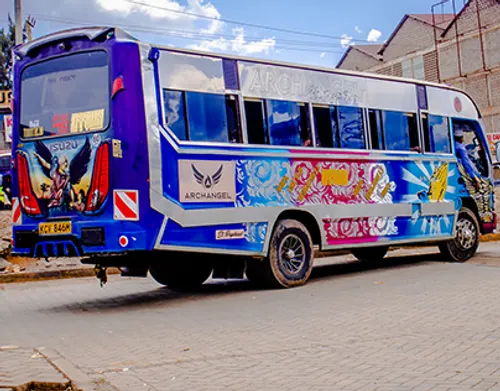

Popular Matatu Routes
Matatus operate on many different routes across Kenya. In large towns and cities, passengers can find vehicles travelling between residential areas, business centres, markets and transport terminals.

NAIROBI ROUTES
Nairobi has a large number of matatu routes connecting different parts of the city. Passengers use matatus to travel between residential areas and the city centre.
NAIROBI TO THIKA
Matatus operate between Nairobi and Thika, carrying passengers between the two urban areas and places along the route.
NAIROBI TO NGONG
This route connects Nairobi with Ngong and surrounding areas. Many passengers use public transport for work, school and other daily activities.
NAIROBI TO KIAMBU
Matatus also connect Nairobi with Kiambu and nearby communities. The route is used by passengers travelling for business, school and personal activities.
Why Routes Are Important
Public transport routes make it easier for people to move between different areas. Matatus provide an important connection between residential communities and places where people work, study and conduct business.
TRAVEL TIP
Before boarding a matatu, make sure you know your destination and confirm that the vehicle is travelling in the direction you need.
TELL US YOUR STORY